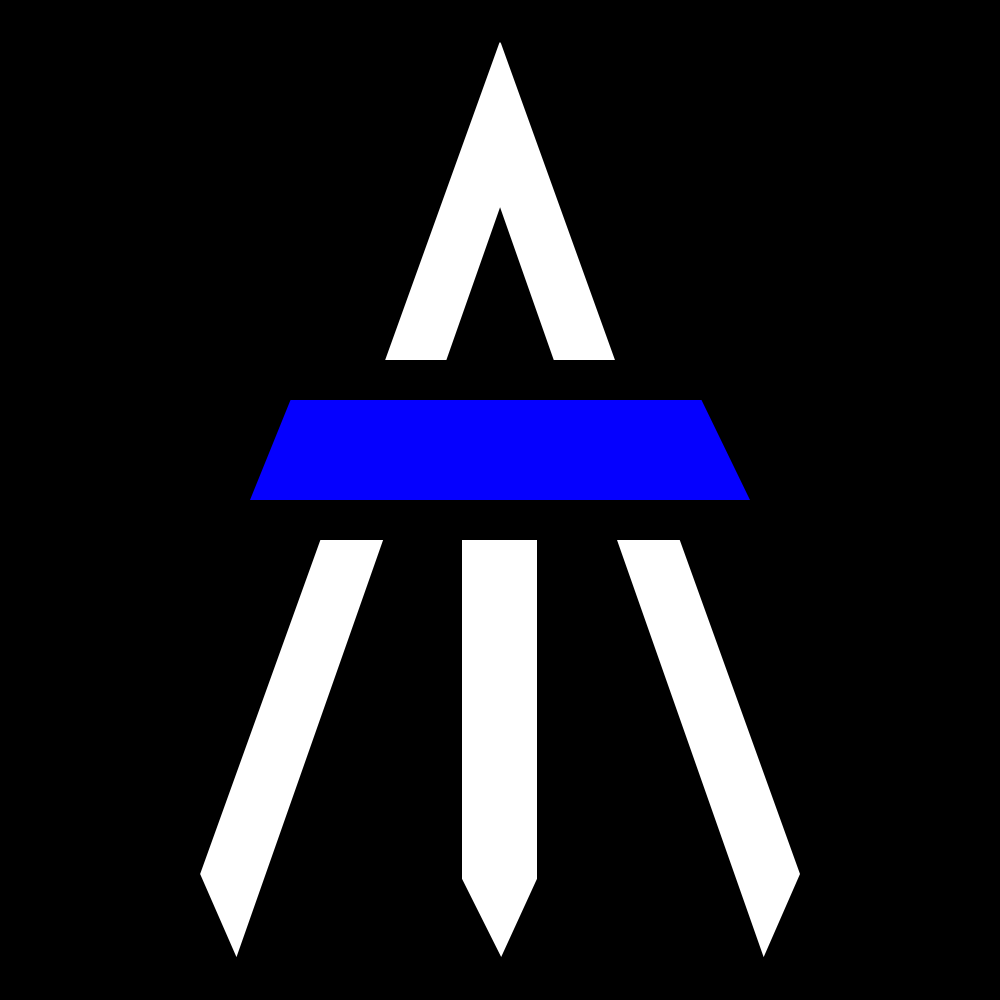

Roughs
The initial goal was the creation of a logo that combined my initials, A and T, in a distinctive way that could be used as both the logo for a website and its favicon. The logo was also used as a way of experimenting with the colour palette, as such you will see it change throughout this page.



Finalists
Narrow circle
This logo takes
Arrow
Final logo
The upright in the T has been extended to better balance the size of the two letters, the shape of the logo is based on the oval previously used as a mask and all the corners are now rounded. The result is a logo which is intended to convey strength